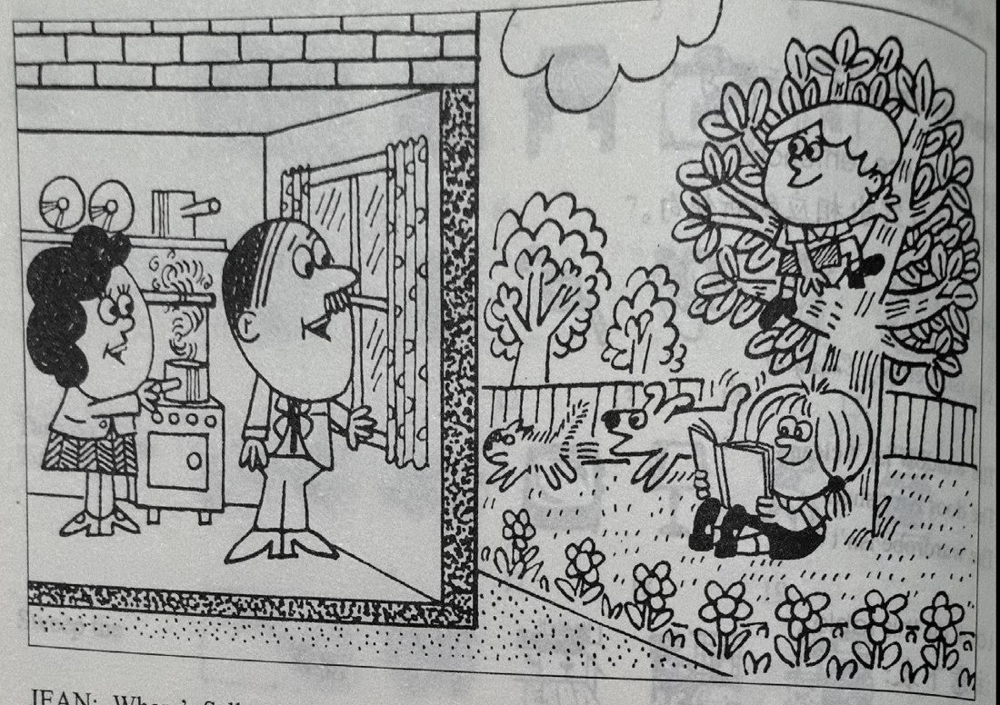
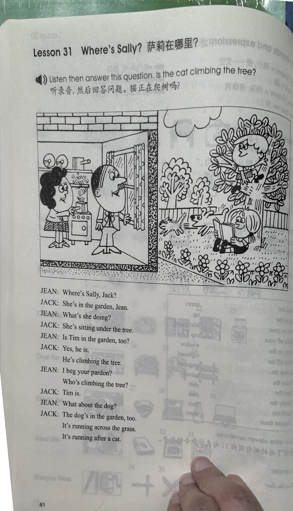
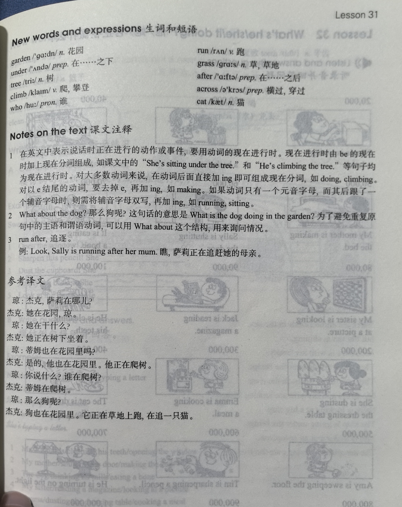

Lesson content · 课文
Lesson 31: Where's Sally? · 萨莉在哪里？
Listen then answer this question. 听录音，然后回答问题。
Is the cat climbing the tree?
猫正在爬树吗？
JEAN: Where’s Sally, Jack?
JACK: She’s in the garden, Jean.
JEAN: What’s she doing?
JACK: She’s sitting under the tree.
JEAN: Is Tim in the garden, too?
JACK: Yes, he is. He’s climbing the tree.
JEAN: I beg your pardon? Who’s climbing the tree?
JACK: Tim is.
JEAN: What about the dog?
JACK: The dog’s in the garden, too. It’s running across the grass. It’s running after a cat.

New words and expressions · 生词和短语
| Word · 单词 | Pronunciation · 音标 | Meaning · 词义 |
|---|---|---|
| garden | /ˈɡɑːdn/ | n. 花园 |
| under | /ˈʌndə/ | prep. 在……之下 |
| tree | /triː/ | n. 树 |
| climb | /klaɪm/ | v. 爬，攀登 |
| who | /huː/ | pron. 谁 |
| run | /rʌn/ | v. 跑 |
| grass | /ɡrɑːs/ | n. 草，草地 |
| after | /ˈɑːftə/ | prep. 在……之后 |
| across | /əˈkrɒs/ | prep. 横过，穿过 |
| cat | /kæt/ | n. 猫 |
Notes on the text · 课文注释
- 在英文中表示说话时正在进行的动作或事件，要用动词的现在进行时。现在进行时由 be 的现在时加上现在分词组成，如课文中的“她正在树下坐着”（She’s sitting under the tree.）和“他正在爬树”（He’s climbing the tree.）等句子均为现在进行时。对大多数动词来说，在动词后面直接加 -ing 即可组成现在分词，如 doing，climbing。对以 e 结尾的动词，要去掉 e，再加 -ing，如 making。如果动词只有一个元音字母，而其后跟了一个辅音字母时，则需将辅音字母双写，再加 -ing，如 running，sitting。
- What about the dog? 那么狗呢？这句话的意思是 What is the dog doing in the garden? 为了避免重复原句中的主语和谓语动词，可以用 What about 这个结构，用来询问情况。
- run after，追逐。例：Look, Sally is running after her mum. 瞧，萨莉正在追赶她的母亲。
Chinese translation · 参考译文
琼：杰克，萨莉在哪儿？
杰克：她在花园，琼。
琼：她在干什么？
杰克：她正在树下坐着。
琼：蒂姆也在花园里吗？
杰克：是的，他也在花园里。他正在爬树。
琼：你说什么？谁在爬树？
杰克：蒂姆在爬树。
琼：那么狗呢？
杰克：狗也在花园里。它正在草地上跑，在追一只猫。
Practice · 课文练习
Understand the lesson · 课文理解
Comprehension · 理解题
Answer the question about the lesson text. 根据课文回答问题。
-
comprehension: Comprehension · 理解题 — Is the cat climbing the tree?
Practice worksheet · 配套练习
A. Dialogue
Read this dialogue. Fill in the missing words. 填空。
-
worksheet: A. Dialogue — Jean: Jack, the ____ are in the ____. What’s Sally ____?
Jack: She’s ____ under the ____. She’s ____ a book.
Jean: ____ Tim in ____ garden, too?
Jack: Yes, he ____. He’s ____ the tree.
Jean: And where’s the dog? What’s it ____?
Jack: It’s in the ____, too. It’s ____ after a cat.
B. Structure
Write the -ing form of each verb. 写出以下动词的 -ing 形式。
| Add -ing | Double the last letter and add -ing | Take off the -e and add -ing |
|---|---|---|
| climb | sit | make |
| read | run | type |
| cook | shut | take |
-
worksheet: B. Structure — climb
-
worksheet: B. Structure — read
-
worksheet: B. Structure — cook
-
worksheet: B. Structure — sit
-
worksheet: B. Structure — run
-
worksheet: B. Structure — shut
-
worksheet: B. Structure — make
-
worksheet: B. Structure — type
-
worksheet: B. Structure — take
C. Vocabulary
Answer using the prompts. 根据提示回答以下问题。
Example · 例句
What’s Jack doing? (look out of the window) — He’s looking out of the window.
-
worksheet: C. Vocabulary — What’s Jean doing? (cook a meal)
-
worksheet: C. Vocabulary — What’s Tim doing? (climb the tree)
-
worksheet: C. Vocabulary — What’s Sally doing? (sit under the tree / read a book)
-
worksheet: C. Vocabulary — What’s the dog doing? (run across the grass / run after a cat)
Original images · 原图对照
Expand a page to compare it with the transcription. Open the original in a new tab to zoom in.
展开原图核对文字，也可以在新标签页打开原图放大查看。
Lesson text and oral practice · 课文与口头练习
Open original · 打开原图 ↗ Download original · 下载原图


Vocabulary, notes and written exercises · 生词、注释与书面练习
Open original · 打开原图 ↗ Download original · 下载原图



Grammar practice · 语法练习
I. Complete the dialogues using the cues
- Is the boy in bed? (no)
No, he isn't. Where is he? (in the garden/hot) He's in the garden. He's hot. What's he doing? (run across the lawn) He's running across the lawn.
- Is your mother in her chair? (no)
Where is she? (in the kitchen/busy) What's she doing? (cook a meal)
- Is your daughter in the shop? (no)
Where is she? (in the classroom/busy) What's she doing? (read a book)
- Is Jack here? (no)
Where is he? (in the living room/tired) What's he doing? (read a magazine)
- Is John in the living room? (no)
Where is he? (in the kitchen/thirsty) What's he doing? (drink tea)
- Is your brother at home? (no)
Where is he? (in his office/tired) What's he doing? (clean the office)
- Is the employee in the office? (no)
Where is he? (at home/lazy) What's he doing? (watch television)
- Is Nicola in the park? (no)
Where is she? (in her room/cold) What's she doing? (put on some clothes)
II. Make sentences using the cues
- My teacher is sitting at the desk. (write a letter)
She is writing a letter.
- Mike is opening the window. (look at the garden)
- My daughter is sitting under a tree. (read a newspaper)
- A dog is running in the garden. (run after a cat)
- Mary is sharpening a pencil. (do her homework)
- Tom is near the bed. (put on his tie)
- My mother is turning on the tap. (clean the plates)
- Jane is near the door. (turn on the light)
- Mrs. Jones is working in the office. (type a letter)
- A cat is under a tree. (drink its milk)
Your notes and answers
Use this space for longer responses or exercises that do not have an individual answer box.